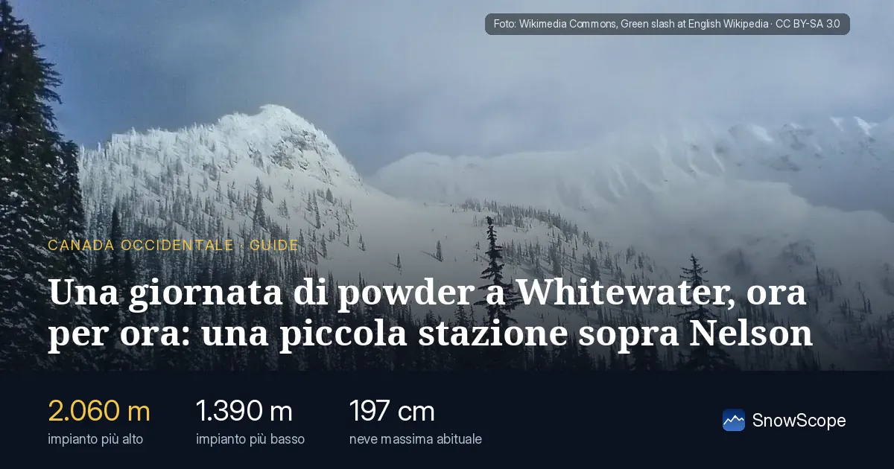

Una giornata di powder a Whitewater, ora per ora: una piccola stazione sopra Nelson
Whitewater è piccola per scelta. Si trova in un'alta conca delle Montagne Selkirk, a breve distanza in auto da Nelson, e questo è esattamente il motivo per cui gli sciatori tornano. In una mattina innevata, puoi essere il primo su una pista di polvere prima che la maggior parte delle stazioni abbia aperto i suoi impianti. Questo articolo illustra come una giornata di tempesta si sviluppa qui, dalla telefonata prima dell'alba all'ultimo impianto nel pomeriggio.
Le previsioni neve in tempo reale per Whitewater Ski Resort nell'app SnowScopeAltezza neve, allerte powder e mappa 3D, gratis.
Prima delle 6 am: il controllo della notte
Una giornata di polvere inizia al chiuso. Hai bisogno di tre cose prima di partire da Nelson: l'ultimo bollettino neve, il bollettino di valutazione del pericolo da Avalanche Canada per la regione, e un controllo delle condizioni della strada da su dal lago. Le grandi tempeste portano vero rischio di valanghe, e la strada di accesso sale ripidamente, quindi gli pneumatici invernali non sono facoltativi.
Il momento della prima risalita dipende da quanta neve è caduta e da quanto è stabile. Una notte tranquilla con neve fresca leggera è diversa da una notte in cui le montagne hanno tremato per il vento. Il bollettino di valutazione ti dice quali pendii sono sicuri e quali sono off-limits.

7 am: i 10 km di auto da Nelson
Nelson è una cittadina sul Braccio Ovest del Lago Kootenay, e Whitewater si trova circa 10 km a sudest, nella conca di Ymir. La strada sale velocemente dall'acqua, quindi il viaggio dura più a lungo di quanto si potrebbe pensare durante le nevicate abbondanti. I visitatori da più lontano spesso volano a Castlegar, circa 43 km a sudovest.
La strada apre presto nei giorni di tempesta in questa piccola stazione, che gestisce cinque impianti da una base di 1.390 m fino a 2.060 m. Nel momento in cui parcheggi, la prima pista dovrebbe avere qualche traccia ma non essere affollata.
8 am: neve a tre altitudini diverse
I 670 m di dislivello di Whitewater sono sufficientemente ripidi affinché la profondità della neve cambi ogni 300 m che sali. Alla base, 1.390 m, i tipici inverni costruiscono un picco di circa 136 cm entro aprile, con circa 26 cm già al suolo a novembre. A metà montagna, 1.725 m, il quadro è più profondo: un picco tipico di 165 cm, e entro metà novembre sono solitamente caduti circa 33 cm.
Ancora più in alto, vicino alla vetta a 2.060 m, il manto nevoso è più ricco. Il picco di stagione tipico è 197 cm, e marzo e aprile sono i mesi più nevosi. Questa fascia è dove le tempeste tardive rimangono leggere più a lungo, e dove la visibilità tende ad essere migliore nelle mattinate di polvere.
9 am: gli alberi contro le conche
Circa il 62 percento della montagna è classificato come terreno avanzato, e una mattina di tempesta costringe a una scelta. Gli alberi mantengono la neve più morbida e migliore protezione dal vento, mentre le conche aperte possono essere erose dalla tempesta stessa, soprattutto in vetta. In una notte ventosa, quello che è caduto sulla cresta probabilmente è finito sottovento.
Scia con un compagno che rimane in vista tra gli alberi, e verifica la profondità con i tuoi primi turni prima di lanciarti a velocità. Neve fresca su terreno duro è veloce; neve fresca su strati deboli può nascondere un problema. Gli alberi sono gentili, ma gli alberi hanno rocce.
Metà giornata: perché le piccole stazioni contano
Il rifugio di Whitewater non è solo un riparo; ha la reputazione del suo cibo che si diffonde oltre la valle. Un pranzo caldo e guanti asciutti resettano il tuo corpo e la tua mente. In una stazione con cinque impianti, puoi mangiare senza sentirti di perdere ore in coda.
A mezzogiorno le linee facili sono tracciate, e il vento in vetta avrà ordinato la neve fresca. È questo il momento in cui puoi salire o fare un'escursione ai bordi del terreno pattugliato, dove la miglior polvere solitamente si nasconde.
Pomeriggio a sera: la stagione in un giorno
Whitewater ha aperto nel 1976. Negli ultimi 46 inverni, la profondità della neve è stata stabile e profonda. A metà montagna, il picco mediano nei primi quindici inverni era circa 157 cm; negli ultimi quindici era circa 168 cm. Lo scorso inverno, 2025-26, era leggermente inferiore, a 145 cm. Questo ti dice qualcosa: la montagna non scherza con la neve.
Nel tardo pomeriggio la luce sta svanendo, ma la vetta rimane bianca più a lungo dei pendii inferiori. Se ti rimane energia, quello è il luogo dove la miglior neve non tracciata della giornata spesso ti aspetta. Al tramonto sarai stanco, felice e pronto per il viaggio di ritorno giù a Nelson.
Consigli per sciatori
- Controlla la valutazione del pericolo da Avalanche Canada prima di lasciare le piste battute. I giorni di tempesta significano vero pericolo.
- Pneumatici invernali per la salita da Nelson; la strada è ripida e può ghiacciare rapidamente.
- Tra gli alberi in una mattina di tempesta, scia con un compagno in vista. Verifica la profondità con i primi turni.
- La neve sulla mappa non significa che la stazione sia aperta. Controlla il sito ufficiale e il rapporto mattutino per lo stato degli impianti.
- Porta guanti asciutti e mangia un pranzo caldo; le piccole stazioni riempiono il rifugio velocemente nei giorni di polvere.
Su questi numeri
Le altezze neve delle località sono la neve più alta sui pendii superiori alla data indicata; sono stime per un'area, non una misura in un punto. Le previsioni possono cambiare. Leggi sempre il bollettino valanghe ufficiale prima del fuoripista.
Bollettini valanghe ufficiali: Avalanche Canada
Cita questo articolo
Per ricerca, didattica o stampa: numeri e grafici sono liberamente riutilizzabili con licenza CC BY 4.0 citando così.
SnowScope (2026), Una giornata di powder a Whitewater, ora per ora: una piccola stazione sopra Nelson, https://snowscope.app/blog/it/2026/11/whitewater-powder-day-hour-by-hour-nelson.html, consultato il 2026-11-09
SnowScope (Atlas Labs). (2026, November 9). Una giornata di powder a Whitewater, ora per ora: una piccola stazione sopra Nelson. SnowScope snow reports. https://snowscope.app/blog/it/2026/11/whitewater-powder-day-hour-by-hour-nelson.html
BibTeX
@misc{snowscope2026whitewaterpowderdayhourb,
author = {{SnowScope (Atlas Labs)}},
title = {Una giornata di powder a Whitewater, ora per ora: una piccola stazione sopra Nelson},
year = {2026},
month = nov,
howpublished = {\url{https://snowscope.app/blog/it/2026/11/whitewater-powder-day-hour-by-hour-nelson.html}},
note = {Published 2026-11-09 19:21 UTC; accessed 2026-11-09}
}· CC BY 4.0 · Metodi, dati e strumenti →
Whitewater Ski Resort: neve e temperatura per quota, quest'inverno vs lo scorso (strumenti) →
Segui Whitewater Ski Resort
Gratis: un messaggio quando arriva la neve e il meteo ogni mattina.